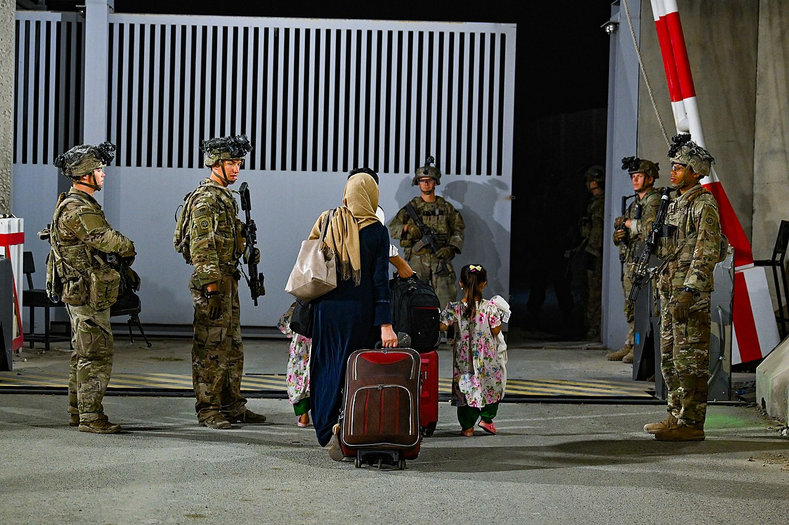

The Kabul Airlifts
Seeing the threat of a Taliban-controlled Afghanistan after the fall of the capital Kabul, many nations such as the United States, United Kingdom, Canada, France, Germany, and others decided to begin evacuating their citizens and Afghan nationals out of the country. All those countries conducted their evacuation operations through the Harim Karzai International Airport (now Kabul International Airport) as it was most accessible. Also, some countries, particularly the United States and its allies, had military personnel stationed at the airport to ensure order and safety in conducting those operations (Saric, 2021).
Despite those precautions by participating nations, they could not prevent casualties among the civilian and military population. For example, on August 26, 2021, a suicide bomber affiliated with the Islamic State caused over 180 total deaths (Hashemi et al., 2021) and over 150 total injuries (BBC Visual Journalism Team, 2021). Nonetheless, the evacuation continued and eventually ended with the final American flight on August 30, 2021 (Shabad & Pettypiece, 2021).

The Destinations of the Evacuees
A crucial question that one may ask regarding the evacuations is in which places did the airlifts land? In other words, where were the destinations of the evacuees? Most evacuees landed on military bases, such as those controlled by the US. Examples of military bases used for temporary housing of Afghan evacuees include the following:
- Al Uedid Air Base, Qatar (Cogner, 2021)
- Ramstein Air Base, Germany (Doornbos, 2021a)
- Fort Lee, United States
- Fort Bliss, United States
- Fort McCoy, United States (Doornbos, 2021b)
On the other hand, some evacuees, especially those under the Pakistani-led evacuation efforts, landed directly on civilian international airports (Ashgar, 2021). In both cases, the evacuees would temporarily settle in a specific facility or region before moving to another place or country where they would permanently live.
Footage of the Evacuation
Here is a video from Hix & Aulick (2021) showing American and German military personnel assisting in the evacuation (Video Duration: 3 minutes & 9 seconds).
About the Afghan Refugees
Additionally, here is a video from Vice News (2021) explaining information about the refugees in Qatar and their uncertain future (Video Duration: 6 minutes & 22 seconds).
Social Media Links (for contact, feedback, query, etc.):